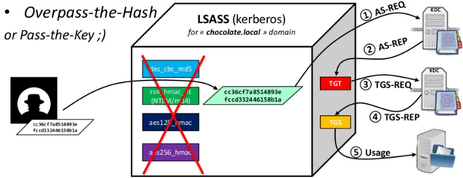

Kerberos
It's all about keys and tickets
Example:
Adminsitrateur wants to access cifs on a Win81 machine on chocolate.local domain
Needs 3 keys, all are in Active Directory
And all are derived from password
Kerberos::Keys- The DC long-term secret key (domain key)
- Under the mysterious krbtgt account (rc4, aes128, aes256, des . . . )
- Needed to sign Microsoft specific data in "PAC", encrypt TGT
- The Client long-term secret key (derived from password)
- Under the user/computer/server account
- Needed to check AS-REQ, encrypt session key
- The Target/Service long-term secret key (derived from password)
- Under the computer/server account
- Needed to countersign data in "PAC" of TGS, encrypt TGS
